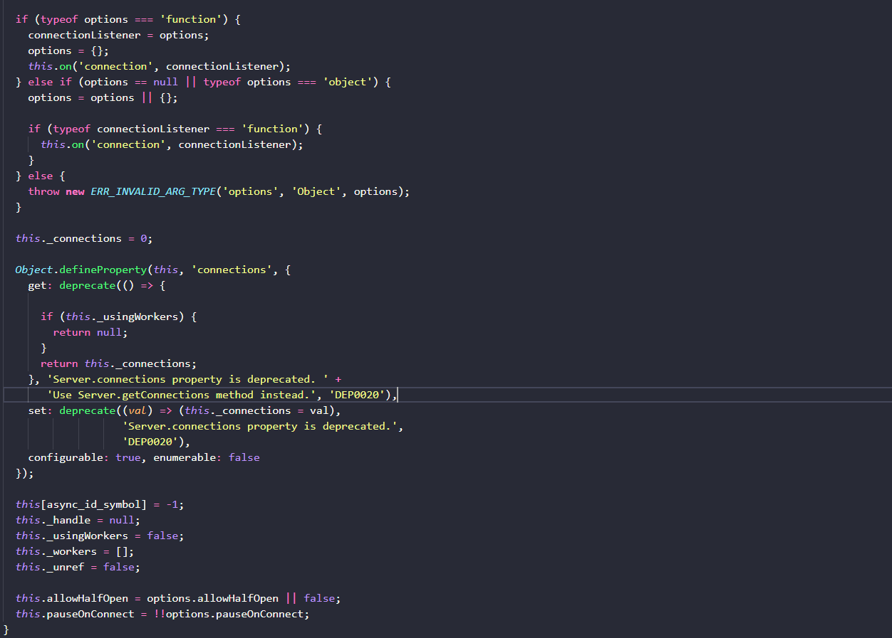
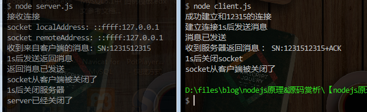
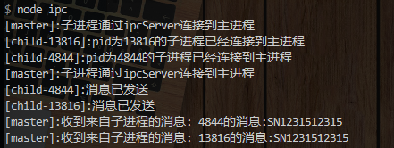
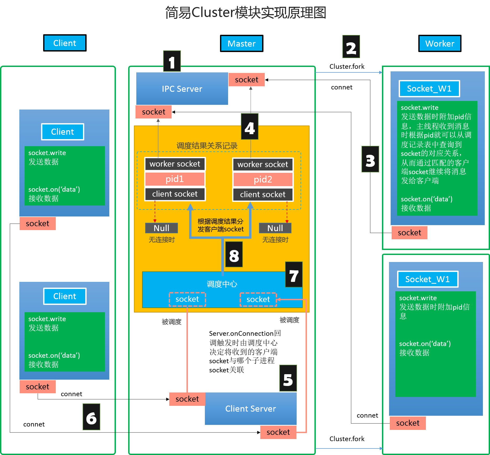
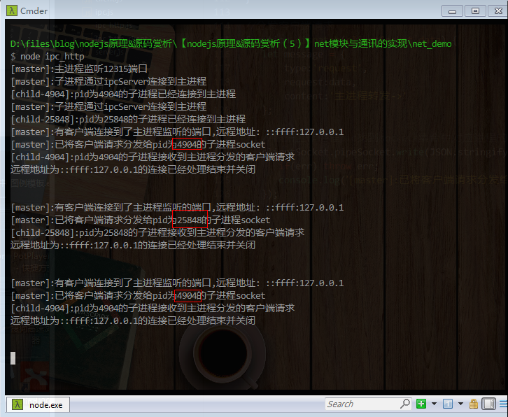
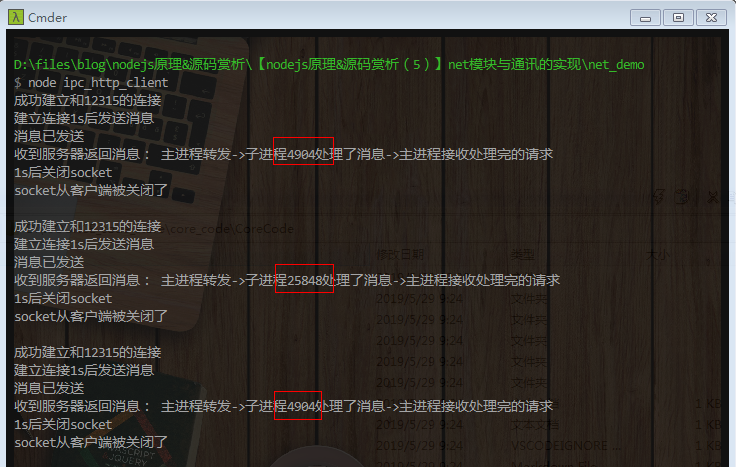

原文连接:https://www.cnblogs.com/dashnowords/p/10976552.html

示例代码托管在：http://www.github.com/dashnowords/blogs
博客园地址：《大史住在大前端》原创博文目录
华为云社区地址：【你要的前端打怪升级指南】
一. net模块简介
net模块是nodejs通讯功能实现的基础，nodejs中最常用的功能就是作为WebServer使用，建立服务器时使用的http.createServer就是在net.createServer方法的基础上建立的。前端最熟悉的http协议属于应用层协议，应用层的内容想要发送出去，还需要将消息逐层下发，通过传输层（tcp,udp），网际层(ip)和更底层的网络接口后才能被传输出去。net模块就是对分层通讯模型的实现。
net模块中有两大主要抽象概念——net.Server和net.Socket。《deep-into-node》一书中对Socket概念进行了解释：
Socket 是对 TCP/IP 协议族的一种封装，是应用层与TCP/IP协议族通信的中间软件抽象层。它把复杂的TCP/IP协议族隐藏在Socket接口后面，对用户来说，一组简单的接口就是全部，让Socket去组织数据，以符合指定的协议。
Socket 还可以认为是一种网络间不同计算机上的进程通信的一种方法，利用三元组（ip地址，协议，端口）就可以唯一标识网络中的进程，网络中的进程通信可以利用这个标志与其它进程进行交互。
简单地说，net.Server实例可以监听一个端口（用于实现客户端TCP连接通讯）或者地址（用于实现IPC跨进程通讯），net.Socket实例可以建立一个套接字实例，它可以用来和server建立连接，连接建立后，就可以实现通讯了。你可以将socket想象成手机，把server想象成基站，虽然不是很贴切，但可以降低理解难度。net相关API可以直接查看中文文档【net模块文档】。
二. Client-Server的通讯
2.1 server的建立
Server类的定义非常精简，也很容易看懂：

可以看到构造函数基本上只是初始化了一些属性，然后添加了对connection事件的响应。服务器是net.Server类的实例，通过net.createServer([options][,onConnection] )方法建立，如果传入一个函数，则这个函数会作为connection事件的回调函数，当一个socket实例连接到server时，connection事件就会触发，回调函数中的形参就指向了发起连接的socket实例。server实例并不能独立工作，作为网络服务器使用时需要需要调用listen方法来监听一个地址，示例如下：
const net = require('net');
const { StringDecoder } = require('string_decoder');
let decoder = new StringDecoder('utf8');
let server = net.createServer(socket=>{
console.log('接收连接');
socket.on('data',data=>{
console.log('收到来自客户端的消息:',decoder.write(data));
});
socket.on('end',function(){
console.log('socket从客户端被关闭了');
});
});
server.listen(12315);socket上以流的形式发送数据，所以需要调用string_decoder模块进行解码才能够看到内容，否则看到的就是原始的字节信息。上面的实例监听了12315端口。
2.2 Socket的建立
前文已经提及Socket是对TCP/IP协议族的一种封装。客户端通讯套接字是net.Socket的实例，通过调用实例方法socket.connect(args)来和服务器建立连接，作为客户端通讯套接字时需要监听端口号，建立连接后，客户端server通过connection事件的回调函数就可以拿到发起连接的socket实例，这样客户端和服务器就可以通讯了，其中一方通过socket.write（）方法写入数据，另一方注册的监听器socket.on('data',onData)回调函数就会收到信息。socket实例化示例如下:
const net = require('net');
let socket = new net.Socket();
socket.connect(12315);
//连接服务器
socket.on('connect',c=>{
console.log('成功建立和12315的连接')
setTimeout(()=>{
console.log('建立连接1s后发送消息');
socket.write('SN:1231512315','utf8',function(){
console.log('消息已发送');
});
},1000);
});
socket.on('data',function(resp){
console.log('收到服务器返回消息：',resp);
});
socket.on('end',function(){
console.log('socket从客户端被关闭了');
})客户端connect连接服务器的动作，就好比打电话前要先拨号一样，等接通以后，你说的话（也就是socket.write( )写入的data）才能被发送过去。【代码仓的示例DEMO】中提供了相对完整的示例,分别放在server.js和client.js中，你可以通过控制台打印的信息来观察每条语句执行的先后顺序，熟悉从通信建立到消息收到再到服务器关闭的整个过程，记得要先起服务器，后起客户端。

Tips：你可以使用postman向这个server发一个GET请求，看看是什么样子，对理解
http和tcp/ip的关系有很大帮助，它非常直观，反正我是第一次见。
三. IPC通讯
IPC通讯是指Inter Process Communication，也就是跨进程通讯，上一节在提到cluster时已经介绍过进程之间是资源隔离的，所以跨进程通讯也需要通过net模块来建立消息管道。它的用法比较简单，只需要将server.listen( )和socket.connect( )的参数从端口号换成地址字符串就可以了。示例代码如下：
const net = require('net');
const cluster = require('cluster');
const path = require('path');
const { StringDecoder } = require('string_decoder');
let serverForIPC;//作为子进程的server
if (cluster.isMaster) {
//主进程执行逻辑
setupMaster();
cluster.fork();//生成子进程
cluster.fork();//生成另一个子进程
} else {
//子进程执行逻辑
setupWorker();
}
//主进程逻辑
function setupMaster() {
//作为Server监听子进程消息
let decoder = new StringDecoder('utf8');
//windows系统中要求的IPC通讯命名规则
let ipcPath = path.join('\\\\?\\pipe', process.cwd(), 'dashipc');
serverForIPC = net.createServer(socket=>{
console.log(`[master]:子进程通过ipcServer连接到主进程`);
socket.on('data',data=>{
console.log('[master]:收到来自子进程的消息:',decoder.write(data));
});
});
//IPC-server端监听指定地址
serverForIPC.listen(ipcPath);
}
//子进程逻辑
function setupWorker() {
let ipcPath = path.join('\\\\?\\pipe', process.cwd(), 'dashipc');
let socket = new net.Socket();
//子进程的socket连接主进程中监听的地址
socket.connect(ipcPath,c=>{
console.log(`[child-${process.pid}]:pid为${process.pid}的子进程已经连接到主进程`);
//过一秒后发个消息测试一下
setTimeout(()=>{
socket.write(`${process.pid}的消息:SN1231512315`,'utf8',function(){
console.log(`[child-${process.pid}]:消息已发送`);
});
},1000);
});
}需要注意尽管主进程和子进程运行的是同样的脚本，但执行的具体逻辑由cluster.isMaster进行了区分。当主进程的脚本运行时会建立一个IPC通讯管道的server端并监听指定地址，然后通过cluster.fork生成子进程，子进程会执行setupWorker( )方法的逻辑，新建一个socket实例并连接主进程监听的地址，这样跨进程通讯就建立了。示例代码放置在代码仓中的ipc.js中,运行结果如下：

四. 撸一个简易的cluster通讯模型
既然客户端通讯和跨进程通讯都实现了，那么把它们连起来协调好，其实就可以复现cluster集群模块的功能了，虽然它不能等同于cluster的源码，cluster中跨进程通讯是直接可以使用的，不需要自己手动建立，但“造轮子”对于理解集群通讯机制非常有帮助。简易模型的基本方案如下，逻辑的顺序已经标记出来了，在前文的基础上实际上增加的只是调度相关的功能（也就是橙色背景的部分）：

首先主线程和子线程之间建立IPC通讯，连接建立后，由子进程将自己的pid通过socket发给主进程，这样主进程就知道连接到IPCserver的socket是哪个子进程连过来的了，demo在内部构建了一个type属性为internal_init的消息来完成这个登记动作，然后启动一个接收客户端连接的Server，监听指定的端口。接下来到了第6步，客户端新建了socket连接到了主线程Client Server监听的端口，clientServer把它发过来的socket传给调度中心，调度中心根据一定规则（demo中直接就简单粗暴地轮换使用各个线程）决定将这个socket与哪个worker socket相匹配（所谓匹配就是指client socket发来的消息应该调用哪个worker socket的write方法来分发给对应的子进程），然后将这个客户端socket登记到匹配记录表中某条记录的client socket上，这样通讯通道就建立好了。
当客户端调用socket.write来写入数据时，主线程就会收到这个数据，然后根据已经建立好的socket关系把这条消息write到子进程，子进程处理完后在消息体中增加一个pid属性标明这个消息是哪个进程处理的(这个标记也可以在主进程中添加，因为主进程中维护的有pid,client socket和worker socket的对应关系)，然后调用socket.write发回给主进程，主进程根据消息的pid属性在记录表中找到这个消息应该由哪个client socket来返回，找到后调用它的end方法将数据返回给客户端，这样就完成了一次请求分发。
demo中提供了示例，ipc_http.js是简易集群模型的服务端，ipc_http_client.js是客户端，前后一共发送了3次请求，结果如下：
服务端的日志：

客户端的请求：

上面的示例仅仅是为了帮助理解网络通信和跨进程通信协作的原理，并不代表cluster的源码，但通信层面的原理是类似的，实际开发中跨进程通讯时不需要自己再构建IPC消息通道，因为子进程返回的process上就已经集成了跨进程通讯能力，理解这个简化的模型对阅读cluster模块的通讯原理能够提供很好的过渡。